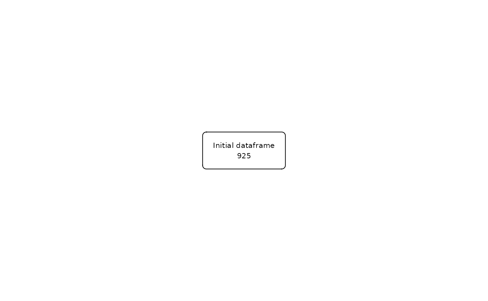
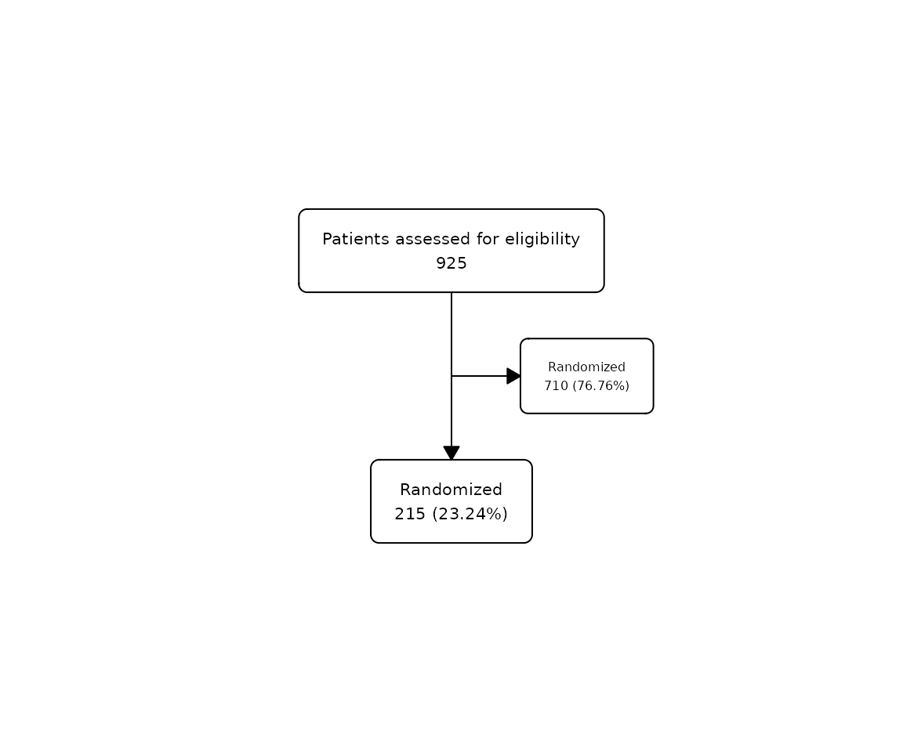
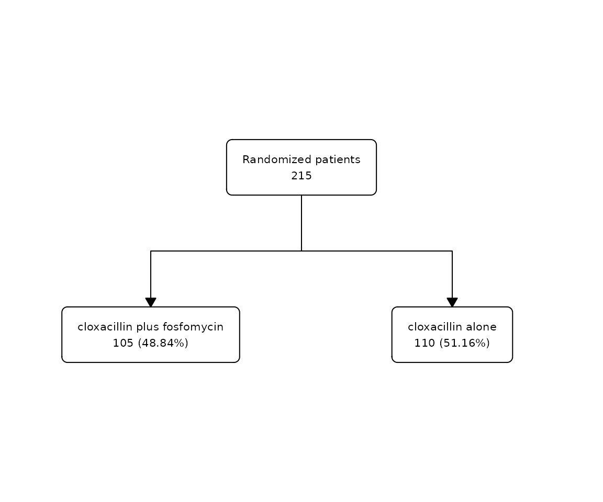

Overview
flowchart is a package for drawing participant flow
diagrams directly from a data.frame using tidyverse. It
provides a set of functions that can be combined with |>
to create all kinds of flowcharts from a
data.frame in an easy way:
as_fc()transforms adata.frameinto afcobject that can be manipulated by the packagefc_split()splits aflowchartaccording to the different values of a column in thedata.framefc_filter()creates a filtered box from theflowchart, based on the evaluation of an expression in thedata.framefc_merge()combines horizontally two differentflowchartsfc_stack()combines vertically two differentflowchartsfc_modify()allows to modify the parameters of theflowchartwhich are stored in.$fcfc_draw()draws theflowchartcreated by the previous functionsfc_export()allows to export theflowchartdrawn to the desired format
Installation
We can install the stable version in CRAN:
install.packages("flowchart")Or the development version from GitHub:
# install.packages("remotes")
remotes::install_github('bruigtp/flowchart')
safo dataset
We will use the built-in dataset safo, which is a
randomly generated dataset from the SAFO trial1. SAFO is an
open-label, multicentre, phase III–IV superiority randomised clinical
trial designed to assess whether cloxacillin plus fosfomycin
administered during the first 7 days of therapy achieves better
treatment outcomes than cloxacillin alone in hospitalised patients with
meticillin-sensitive Staphylococcus aureus bacteraemia.
## # A tibble: 6 × 21
## id inclusion_crit exclusion_crit chronic_heart_failure expected_death_24h
## <int> <fct> <fct> <fct> <fct>
## 1 1 Yes No No No
## 2 2 No No No No
## 3 3 No No No No
## 4 4 No Yes No No
## 5 5 No No No No
## 6 6 No Yes No No
## # ℹ 16 more variables: polymicrobial_bacteremia <fct>,
## # conditions_affect_adhrence <fct>, susp_prosthetic_valve_endocard <fct>,
## # severe_liver_cirrhosis <fct>, acute_sars_cov2 <fct>,
## # blactam_fosfomycin_hypersens <fct>, other_clinical_trial <fct>,
## # pregnancy_or_breastfeeding <fct>, previous_participation <fct>,
## # myasthenia_gravis <fct>, decline_part <fct>, group <fct>, itt <fct>,
## # reason_itt <fct>, pp <fct>, reason_pp <fct>Basic operations
The first step is to initialise the flowchart with
as_fc. The last step, if we want to visualise the created
flowchart, is to draw the flowchart with
fc_draw. In between we can combine the functions
fc_split., fc_filter, fc_merge,
fc_stack with the operator pipe (|> or
%>$) to create complex flowchart
structures.
Initialize
To initialize a flowchart from a dataset we have to use
the as_fc() function:
## List of 2
## $ data: tibble [925 × 21] (S3: tbl_df/tbl/data.frame)
## $ fc : tibble [1 × 22] (S3: tbl_df/tbl/data.frame)
## - attr(*, "class")= chr "fc"The safo_fc object created is a fc object,
which consists of a list containing the tibble of the
data.frame associated with the flowchart and
the tibble that stores the flowchart parameters. In this
example, safo_fc$data corresponds to the safo
dataset while safo_fc$fc contains the parameters of the
initial flowchart:
safo_fc$fc## # A tibble: 1 × 22
## id x y n N perc label text_pattern text type group just
## <dbl> <dbl> <dbl> <int> <int> <chr> <chr> <chr> <chr> <chr> <lgl> <chr>
## 1 1 0.5 0.5 925 925 100 Init… "{label}\n{… "Ini… init NA cent…
## # ℹ 10 more variables: text_color <chr>, text_fs <dbl>, text_fface <dbl>,
## # text_ffamily <lgl>, text_padding <dbl>, bg_fill <chr>, border_color <chr>,
## # width <lgl>, height <lgl>, end <lgl>Alternatively, if a data.frame is not available, we can
initialize a flowchart using the N = argument
manually specifying the number of rows:
Draw
The function fc_draw() allows to draw the
flowchart associated to any fc object.
Following the last example, we can draw the initial
flowchart that has been previously created:
safo_fc |>
fc_draw()
Filter
We can filter the flowchart using
fc_filter() specifying the logic in which the filter is to
be applied. For example, we can show the number of patients that were
randomized in the study:
safo |>
as_fc(label = "Patients assessed for eligibility") |>
fc_filter(!is.na(group), label = "Randomized", show_exc = TRUE) |>
fc_draw()Percentages are calculated from the box in the previous level. See
‘Modify function arguments’ for more information on the
label= and show_exc= arguments.
Alternatively, if the column to filter is not available, we can use
the N = argument to manually specify the number of rows of
the resulting filter:
safo |>
as_fc(label = "Patients assessed for eligibility") |>
fc_filter(N = 215, label = "Randomized", show_exc = TRUE) |>
fc_draw()
Split
We can split the flowchart into groups using
fc_split() specifying the grouping variable. The function
will split the flowchart into as many categories as the
specified variable has. For example, we can split the previous
flowchart showing the patients allocated in the two study
treatments:
safo |>
dplyr::filter(!is.na(group)) |>
as_fc(label = "Randomized patients") |>
fc_split(group) |>
fc_draw()
Percentages are calculated from the box in the previous level.
Alternatively, if the column to split is not available, we can use
the N = argument to manually specify the number of rows in
each group of the resulting split:
safo |>
dplyr::filter(!is.na(group)) |>
as_fc(label = "Randomized patients") |>
fc_split(N = c(105, 110), label = c("cloxacillin plus fosfomycin", "cloxacillin alone")) |>
fc_draw()
The idea is to combine the fc_filter() and
fc_split() functions in the way we want to create different
flowchart structures, however complex the may be. In some
cases, we may want to create two different flowcharts then
merge or stack them into the same
image.
Export
Once the flowchart has been drawn we can export it to
the most popular image formats, including both bitmap (png, jpeg, tiff,
bmp) and vector (svg, pdf) formats, using fc_export():
safo |>
as_fc(label = "Patients assessed for eligibility") |>
fc_filter(!is.na(group), label = "Randomized", show_exc = TRUE) |>
fc_draw() |>
fc_export("flowchart.png")We can change the size and resolution of the stored image.
Additional Details
This vignette only covers the basic functionality of
flowchart. Users may also be interested in more advanced
functionality covered in the available articles, such as how to customize a
flowchart, or examples in the Example Gallery.